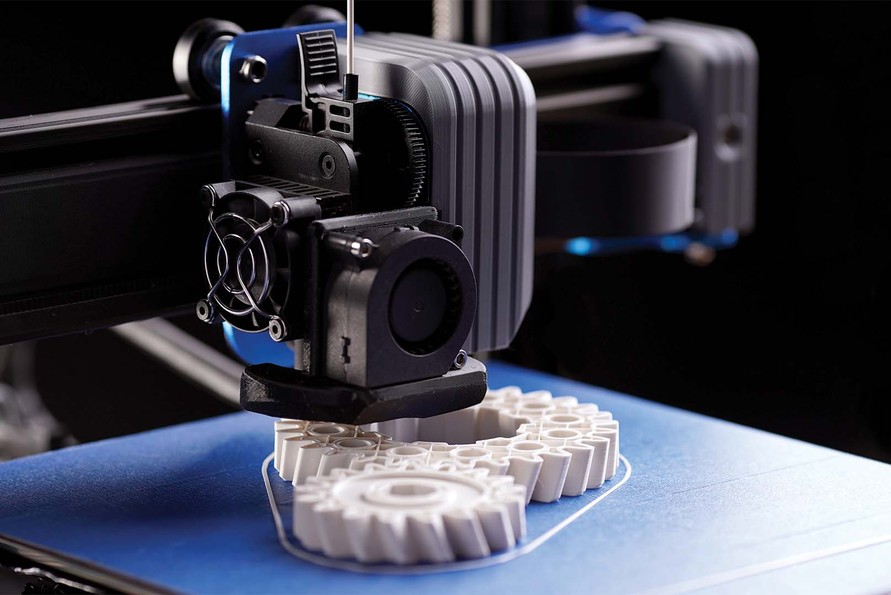

3D printers have been expanding in the sphere of hobbyists, professionals, and industrialists alike.
The major advantage of all 3D printers is the ability to create custom objects on demand,
whether it be a replacement part for a broken item, a prototype for a new invention,
or a pre-existing model downloaded from the internet.
- FDM (Fused Deposition Modeling)
Printers are the most common type, using melted filament to build objects layer by layer.
FDM Printers are used by hobbyists and professionals alike
for rapid prototyping, with finished prints normally requiring little to no finishing work.

- SLA (Stereolithography)
Printers use a laser to cure liquid resin into solid objects, offering high detail and smooth finishes.
SLA printers are often used for dental models, jewelry, and other applications requiring precision.
While SLA printers can produce very detailed prints, they require more post-processing work than FDM printers.
- Concrete Printers
are used in construction to create large-scale structures like walls and buildings. Simialr to FDM printers,
they use a special concrete mixture that is extruded layer by layer to form structures.
Concrete printers are revolutionizing the construction industry by reducing labor costs and construction time.